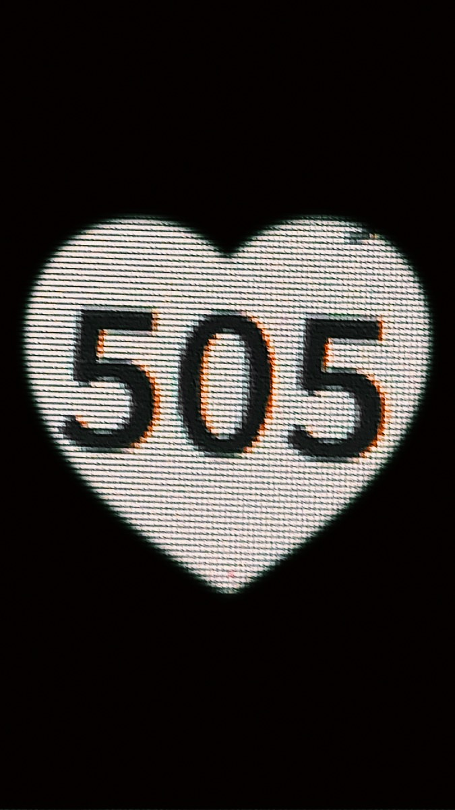
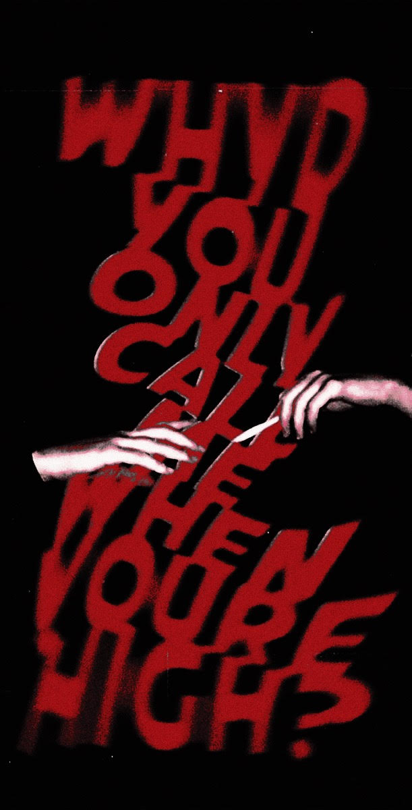
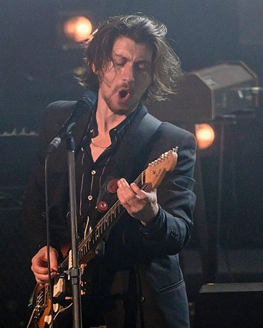
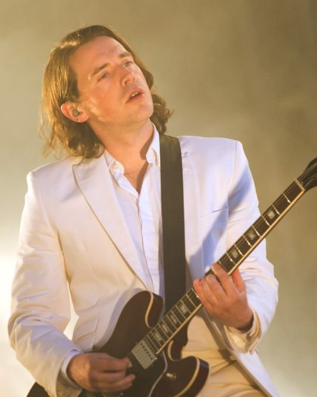
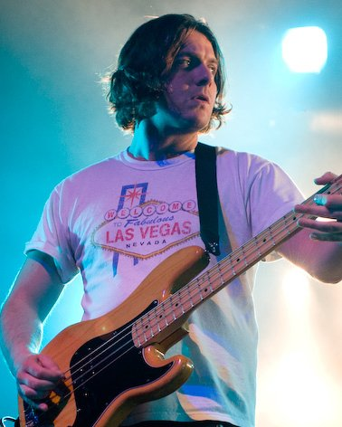
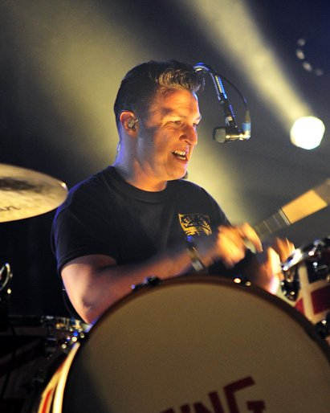

WEB OFICIAL
ARCTIC MONKEYS

WEB OFICIAL |
ARCTIC MONKEYS |
|
BIOGRAFÍA |
DISCOGRAFÍA |
| Siguiendo los pasos de las bandas de garage con espíritu punk que surgieron a principios del milenio, apareció Arctic Monkeys en el Reino Unido. Alex Turner, que formó la banda con sólo 16 años, se reveló como un observador agudo de la realidad en Whatever People Say I Am, That’s What I’m Not, un álbum debut que se vendió más rápido que cualquiera en la historia de la música británica. Sus canciones, píldoras de ritmo y guitarras hiperactivas, se conectaban directamente con las de otros compositores ingleses, como Ray Davies, Paul Weller y Damon Albarn. Tres años después, Humbug amplió las coordenadas del grupo con los legendarios riffs que grabaron con Josh Homme ( Queensof the Stone Age). En 2013, AM llegó con una producción panorámica acorde a las giras por estadios y festivales que eran entonces su hábitat natural. Una vez establecida como institución en el rock contemporáneo, la banda se centró en su lado más experimental con Tranquility Base Hotel & Casino. En este proyecto entre el glam y el jazz, Turner usa elementos de la ciencia ficción para abordar temas como el capitalismo y la influencia de los medios de comunicació. |
| PRÓXIMOS CONCIERTOS | ||
|---|---|---|
| 1. Jeunesse Arena | 4 Noviembre 2022 | |
| Rio de Janeiro, Brazil | ||
| 2. Primavera Sound | 5 Noviembre 2022 | |
| São Paulo, Brazil | ||
| 3. Pedreira Paulo Leminski | 8 Noviembre 2022 | |
| Curitiba, Brazil | ||
| 4. Kilk Fest | 10 Noviembre 2022 | |
| Asunción, Paraguay | ||
| 5. Primavera Sound | 12 Noviembre 2022 | |
| Santiago, Chile | ||
|  | CANCIONES MÁS ESCUCHADAS |
 |
| 1. Do I Wanna Know |
||
|---|---|---|
| 2. Why'd You Only Call Me When You're High |
||
| 3. Fluorescent Adolescent |
||
| 4. R U Mine? |
||
| 5. Arabella |
MIEMBROS DE LA BANDA |
|||
| Alex Turner | Jamie Cook | Nick O'Malley | Matt Helders |
|---|---|---|---|
|
|
|
|
|  |  |  |  |